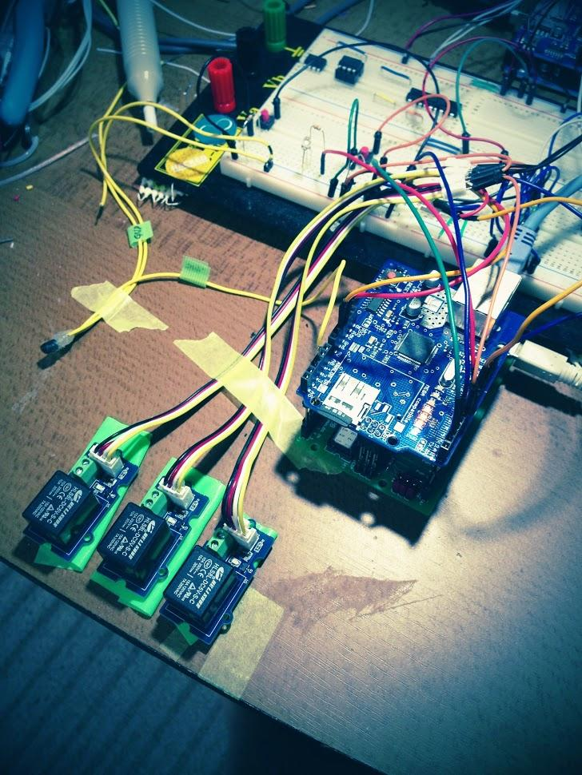
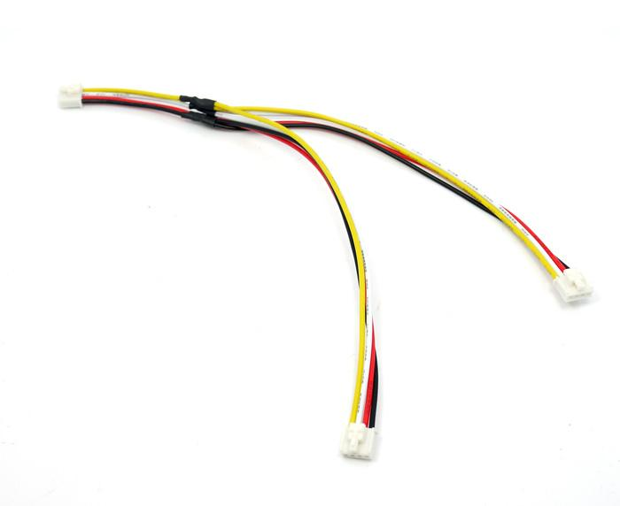
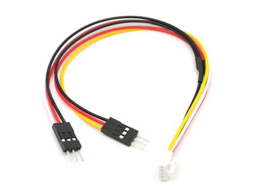
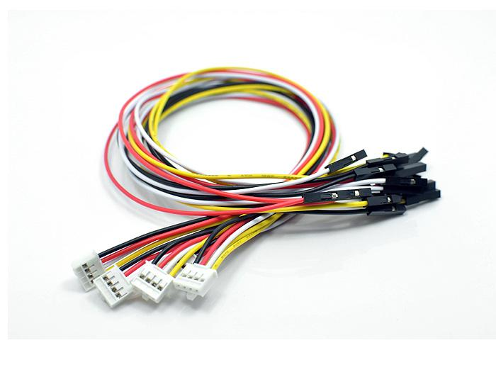

Here we will introduce a variety of cables that Seeed offers. When you make a demo, it's hard to avoid jumping a wire. To be honest, I hate jump a wire, it's really a mess. But sometimes you had to jump a wire, you couldn't make a PCB for an easy application.
We had to admit that jumping a wire is necessary, then why not choose some right cable, to make our demo more neatly.
The following image shows a bad example of jumping lines.

Do you feel just a mess?
Then, let's start the journey of Cables!
Grove Cable is the most common cable in the Grove system. They are used for connecting a Base Shield to a Grove sensor, actuator, or device. Since Grove Shields support connections to multiple devices at the same time, projects may require more than one Grove Cable.
Grove Cables are available in several different lengths, from 5cm (about 2") up to 50cm (about 20"). Choose a length based on how much free space available in your prototyping or project area, or how tightly you need to pack your Grove devices or your embedded system. Below are some direct links to the product pages for the various lengths of Grove Cables. Grove Cables are suitable for point to point connections, for example connecting a Grove Shield to a Grove device. There are other types of Grove cables for other applications.
Grove Cables feature four color coded wires and two male-type modular connectors. Typically, one end plugs into the Grove Shield and the other into the Grove device. The modular connectors are keyed, meaning they are shaped uniquely, and can be put into their mating connector on the shield or device in one and only one way. When plugging Grove Cable connectors into a shield or device, be sure to exert sufficient pressure to lock the two in place.
Grove Cables are wired straight through. That is to say, pin 1 on connector A is connected to pin 1 on connector B, pin 2 to pin 2, and so on. The wires are also color coded. Pin 1 is black, pin 2 is red, pin 3 is white, and pin 4 is yellow. Typically, pins 1 and 2 are ground and power, while pins 1 and 2 are signal, e.g. A1/A2 or D1/D2.
Grove Branch Cable is a cable used in the Grove system. It consists of three male-type latching connectors and four color-coded wires. Grove Branch Cables can be used to support daisy-chaining multiple Grove devices to a Grove shield. Typically, one end is connected to a Grove shield, and the second and third connectors are attached to two Grove devices.
As with other members of the Grove cable family, the male connectors are keyed. This means that they are shaped uniquely and will fit one and only one way into their matching connectors on shields and devices. Also, when attaching the connectors to shields or devices, be sure to press firmly to mate the male connectors on the Grove Branch Cable with the female receptacles on the Grove shield or Grove devices. Since Grove Branch Cables have latches (sometimes referred to as "buckles" or "buckled cables"), when the latch closes, you will hear a small sound and should see the latch close over its corresponding part. These latches (or buckles) improve connections, and are especially handy in high-vibration or production environments, since some force must be used when disconnecting the cable. When moving your Grove device, or changing it, you must also apply a small bit of pressure to release the latch on the Grove Branch Cable connector, and then pull to remove the it from the receptacle or socket.
Use extra care if connecting multiple devices using the Grove Branch Cable. Be aware that the analog or digital pin on the Grove Shield will be shared by both Grove devices. Such configurations may be inappropriate for two analog devices. Using a Grove Branch Cable to connect an analog and a digital Grove device may not work at all.

Sample applications include:
[Link]
Grove Branch Cable for Servos are another type of Grove Cable, and are primarily used to connect one or two servos to your project. They consist of three connectors: one keyed four pin male connector suitable for connecting to a Grove Shield, and two three pin male post-type connectors. In this configuration, power and ground (pins 3 and 4 from the four pin male) are carried to both three pin male connectors. Pin 1 (yellow)of the four pin connector is connected to one of the pins of the Arduino capable of PWM, and is carried out to one of the three pin male post connectors. Pin 2 (white wire) of the four pin connector is also connected to a second PWM-capable pin of the Arduino, and is carried out to the second three pin male post connector.
The four pin keyed connector of the Grove Branch Cable for Servos will usually be connected to a Grove Shield digital socket such as D2-D9. When connecting servos, make a note of the wire color of the digital PWM cable (yellow or white) to know which digital pin corresponds to the servo input.
Note that the Arduino UNO supports PWM on pins 3, 5, 6, 9, 10, and 11. On the Arduino Mega, it works on pins 2 - 13 and 44 - 46. Older Arduino boards with an ATmega8 only support analogWrite() on pins 9, 10, and 11.
Here's a link to some of our Servos.

You can use it for:

There're some other cables for different use, clkic hereto find more information.
Copyright (c) 2008-2016 Seeed Development Limited (www.seeedstudio.com / www.seeed.cc)